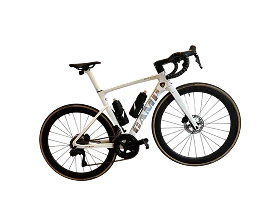
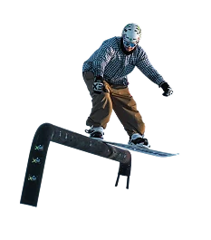

PLATFORMS built from STRUCTURE
to INTERFACE for E-COMMERCE,
MANUFACTURING & FOREIGN TRADE
I take projects end to end — research, information architecture, design systems, and interfaces across every breakpoint. Most sites I inherit aren't broken visually. They're unlabeled, unranked, and routed to no one in particular.
Selected work ↓Most projects arrive with the same problem. The content exists, the services exist, the proof exists — but nothing is labeled, ranked, or routed to the right visitor. The visual layer is rarely what's broken.
So I start with the architecture: who is arriving, what they need to see first, and what has to be true before they act. Colors, type, and components come after.
Every project here went through that sequence, and every design system on this page was built from zero rather than assembled from a kit — tokens, component states, spacing scales, icon sets, handoff documentation.
Recent work spans an 80,000-product e-commerce catalog, a food manufacturer's B2B and B2C platform, and a foreign-trade company with 40+ service landings.
User and business goal mapping
Information architecture
Navigation and mega-menu structure
Content inventory and labeling
Catalogs, filters, and search
Forms, calculators, configurators
Adaptive layouts, 320 to 1920px
Interaction and state design
Component libraries with states
Spacing and grid systems
Icon sets
Handoff documentation
Auto Layout and variables
Prototyping
Yandex.Metrica
Notion


I studied applied informatics, specializing in web and mobile app development, so I read a product from the structure outward — I understand how the thing is actually built. On top of that I hold a second diploma in product development and management, and took design coursework along the way. Design is where those three tracks meet.
Four years in: two freelance, two as a designer at the IT company Rubix, across dozens of projects in different niches. I stay close to where design is moving — new tools, current patterns, and AI as part of the everyday workflow — and I keep sharpening it at conferences and in the community.
Outside of it, I keep an active life: the gym, cycling, skateboarding, snowboarding, and trekking. The same appetite for figuring out how something works, just with fewer screens.